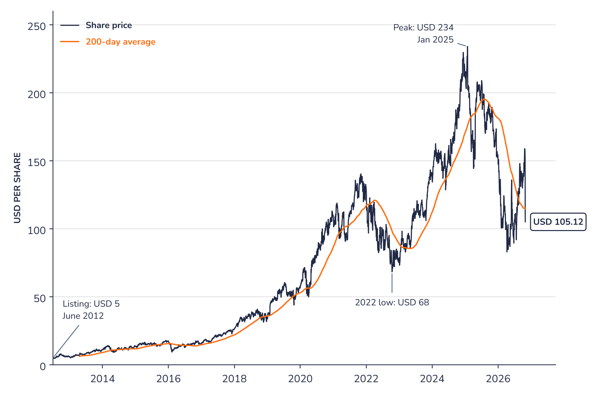

This document is a marketing communication issued for information purposes only. It does not constitute investment research, an offer or a personalised recommendation to buy or sell any financial instrument. Please refer to the important information at the end of this document.
Software and the AI debate
Software stocks have been through a long and deep correction. Since early 2025, investors have increasingly priced in the risk that AI agents will take over tasks that companies currently pay software vendors for, licence by licence. This would erode the subscription model on which the sector has been built.
ServiceNow, long seen as one of the highest-quality names in the sector, has not been spared. Its share has lost more than half of its value since its peak of January 2025.
The reaction to third-quarter results on 29 October shows how fragile sentiment remains. ServiceNow fell 27% in a single session, its largest one-day fall on record, and Fortinet fell by a similar amount. The move spread to other large software names such as Salesforce and Workday.
The market is no longer willing to pay in advance for growth. Software vendors that sit deep inside their customers' processes, and that can sell AI on top of an existing platform, could still turn the shift to their advantage. Until AI visibly lifts overall growth, however, investors are likely to treat every slowdown as a warning rather than a pause.
What this means for investors
Lower valuations alone are not enough to call the bottom in software. The sector has moved from a story investors paid up for to one they need to see proven. The quality of the customer base, cash generation and balance-sheet strength are now the main differences between names, and patience is likely to be required.
After a long derating, the share now has to earn back the market's confidence
Price (30 Oct 2026)
USD 105.12
2026 AI contract value target
> USD 1.7bn
2026 subscription revenue growth (guidance)
21% cc
2026 free cash flow margin (guidance)
36%
1. What the company does
ServiceNow sells a cloud platform that large companies use to run and automate their internal workflows, starting with IT and extending to HR, customer service, security and finance. It now positions itself as the layer that coordinates and controls AI agents across a company, above the applications they already use.
2. Why it could do well
AI is starting to contribute. Management has raised its target for annual contract value from AI products twice this year, to more than USD 1.7bn. Because ServiceNow already holds the data and workflows of its customers, it can sell AI to an installed base rather than win new clients from scratch. The company also generates a great deal of cash: free cash flow was USD 4.5bn in 2025, and management now targets a 36% margin for 2026, up from 35%.
3. What sets it apart
The customer base is large and loyal. ServiceNow works with a large majority of the Fortune 500 and has historically renewed around 98% of its contracts. Customers that use several of its products would find it costly and disruptive to replace them. This protects existing revenue, but it does not by itself guarantee the pace of future growth, which is what the market is now questioning.
4. Cheap, or a value trap?
The share peaked at about USD 234 in January 2025 (adjusted for the five-for-one split of December 2025). It fell to USD 83 in April 2026, recovered to USD 150 ahead of the results, and has given up most of that rebound since. It now trades at about 18 times the free cash flow expected for 2026 (Syz calculation), well below its historical range. This is not the profile of a broken business: revenue still grows at about 20% a year and cash generation keeps improving. But a derating of this scale reflects a lasting change in how the market values software, and a lower multiple could prove justified if growth keeps slowing.
5. Main risks
Contracted revenue for the next twelve months (cRPO) is guided to grow 18.5% in constant currency in Q4, after 21% in Q3. Management cites technical factors, but a further slowdown in 2027 would weaken that explanation.
Acquisitions, led by Armis (USD 7.75bn), were partly debt-financed and weigh on margins and on the readability of organic growth.
AI brings additional computing costs, and sentiment towards software could stay negative whatever the results.
6. What to watch next
Q4 2026 results (late January 2027): cRPO against the 18.5% guidance and the first 2027 targets.
Signs that AI is lifting overall subscription growth, and progress on reducing the acquisition debt.
Conclusion
The third quarter was not a weak quarter in itself: subscription revenue grew 21% to USD 3.99bn, and management raised its full-year targets for revenue, cash flow and AI. But the reaction confirmed that the market no longer gives ServiceNow the benefit of the doubt. A share that has lost more than half of its value in less than two years is signalling doubts about the long-term growth of the model, not about one quarter. ServiceNow keeps real strengths: an embedded customer base, strong cash generation and a credible AI offer. These are what separate it from a company in difficulty. Restoring confidence, however, is likely to take several quarters of stable or improving growth, and the share could remain volatile in the meantime.
Chart 1 · NOW US: a long-term winner going through a deep correction
Daily closing price in USD, adjusted for the five-for-one split of December 2025, with its 200-day moving average, from the June 2012 listing to 30 October 2026

Source: SOURCE_LINE
Over the long term, ServiceNow has been one of the strongest performers in software: the share has risen about twentyfold since its listing in 2012. The correction since January 2025 has brought it back to the levels of 2021. The share has been through a comparable phase before: in 2022 it lost about half its value before reaching new highs in 2024. Past performance does not guarantee a repeat, and the current debate on AI is of a different nature.
The third-quarter results erased most of the recovery seen since the April 2026 low. The share now stands below its 200-day average again, which is falling. A sustained move back above that average could be a first sign that sentiment is stabilising; the April low around USD 83 is the level to watch on the downside.
Sources
Syz Research, SOURCE_LINE; ServiceNow, third-quarter 2026 results release and earnings call (28 October 2026); ServiceNow, Form 10-Q for the first quarter of 2026; press reports. Free cash flow multiple: Syz calculation based on the company's 2026 guidance.